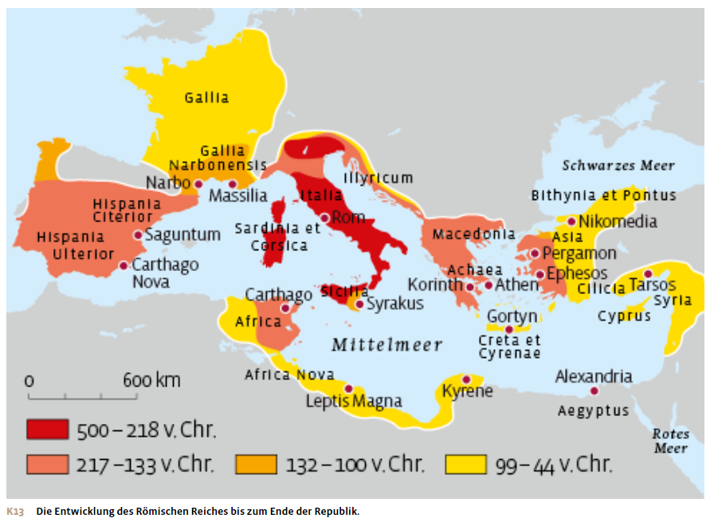
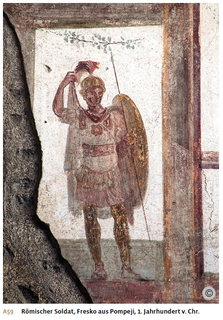
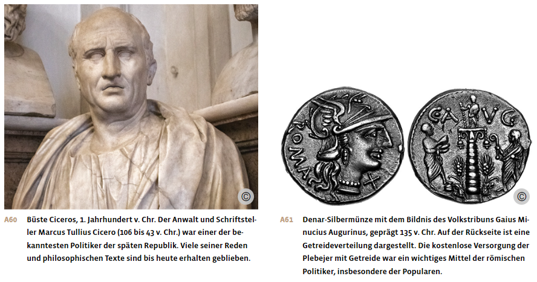
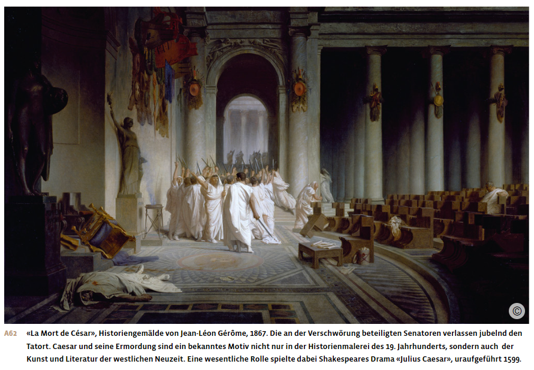
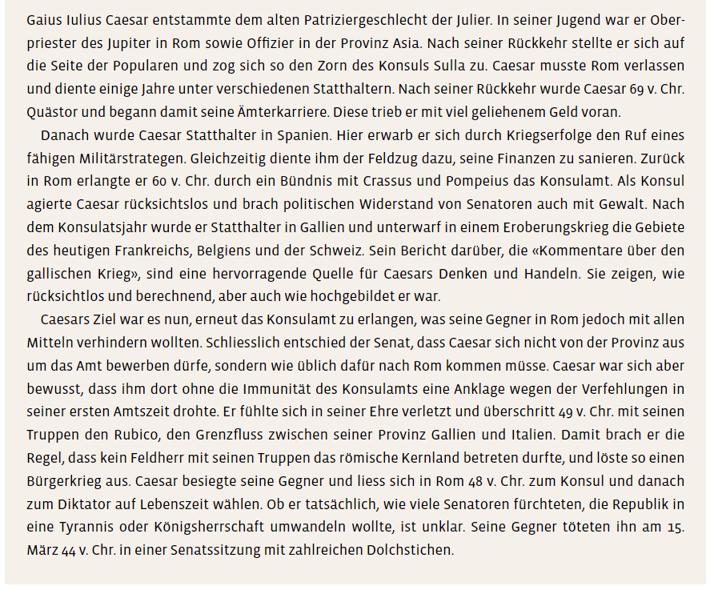

Materialdossier: Rom – Expansion und Krise
Vollständiger Inhalt des Unterrichtsdossiers · Römische Antike_Expansion und Krise.docx
Der Weg zur Weltmacht
Die römische Expansion und ihre Folgen
Die Eroberung Italiens und die Punischen Kriege
Im 4. und 3. Jahrhundert konnte Rom das benachbarte Gebiet Latium gewaltsam in den römischen Stadtstaat integrieren. Gestärkt durch diesen Erfolg, gelang es der römischen Republik bis ca. 270 v. Chr. nach und nach die gesamte italische Halbinsel zu erobern und in ihr Imperium einzugliedern. Entscheidend war dabei, dass die besiegten Völker und Städte Italiens in das römische Staatsystem integriert wurden: Die Eroberten wurden in der Regel nicht als Unterworfene behandelt, sondern erhielten den Status von Bundesgenossen. Die Verbündeten mussten in den künftigen Kriegen selbst Soldaten stellen, profitierten damit aber auch von den nächsten römischen Gebietsgewinnen. Zudem wurden in den eroberten Territorien römische Bürgersiedlungen, sogenannte coloniae, angelegt. Diese Siedlungen kontrollierten die neuen Verbündeten, förderten den Kontakt zwischen Römern und Einheimischen und stabilisierten so die römische Herrschaft.
Nach der Eroberung der italischen Halbinsel versuchte die römische Republik im 2. Jahrhundert v. Chr., auch Sizilien zu besetzen. Hier stiess sie jedoch auf die Karthager, von den Römern auch Punier genannt, die Sizilien zu ihrem Machtbereich zählten. Die reiche Handelsstadt Karthago in der Nähe des heutigen Tunis war im 9. Jahrhundert v. Chr. von phönizischen Kaufleuten gegründet worden und zu einer Grossmacht im westlichen Mittelmeer aufgestiegen. Im Ersten Punischen Krieg, der von 264 bis 241 v. Chr. dauerte, gelang es Rom, die Karthager aus Sizilien wie auch aus Sardinien und Korsika zu verdrängen.
Im Zweiten Punischen Krieg von 218 bis 201 v. Chr. versuchte der karthagische Feldherr Hannibal, Rom zu besiegen, indem er mit einem Heer von der Iberischen Halbinsel über die Alpen marschierte. Er fiel in Italien ein und schlug das römische Heer mehrmals. Doch das römische Bündnissystem erwies sich als stabil. Während Karthago nur über eine beschränkte Zahl von Söldnern verfügte, hatte Rom dank seiner italischen Verbündeten ein grosses Reservoir an Soldaten. Diese konnten Hannibal zuerst in Italien, dann in Spanien und Afrika schlagen. Im Dritten Punischen Krieg griffen die römischen Armeen schliesslich Karthago direkt an und zerstörten die Stadt 146 v. Chr. vollständig.

Das Ausgreifen in den östlichen Mittelmeerraum und die Verwaltung der eroberten Gebiete Der zweite Krieg mit Karthago verwickelte das Römische Reich zunehmend in die Konflikte im östlichen Mittelmeerraum, da sich König Philipp V. von Makedonien mit Roms Erzfeind Hannibal verbündet hatte. Nach dem Sieg über Karthago weiteten die Römer daher ihre Machtpolitik nach Osten aus. In einer Reihe von Kriegen im 2. und 1. Jahrhundert v. Chr. eroberte Rom die hellenistischen Grossreiche und die griechischen Poleis.
Der nun intensive Kontakt mit der griechischen Welt weckte in Rom das Bedürfnis, die eigene Vergangenheit zu glorifizieren. In dieser Zeit entstanden die ersten römischen Geschichtswerke – fast 500 Jahre nach der angeblichen Gründung Roms. Aus dieser Zeit stammen auch die ersten heute noch bekannten römischen Münzen: Diese wurden mit dem mythischen Motiv der Wölfin mit Romulus und Remus geprägt.
Ein Grund für den Erfolg Roms gegenüber Karthago und den hellenistischen Reichen lag in den unterschiedlichen Armeestrukturen. Wie Karthago führten auch die hellenistischen Könige meist Söldnerheere. Diese waren teuer und nur so lange loyal, wie der Krieg erfolgreich verlief und der Sold zuverlässig floss. Für jahrelange Kriegsführung, in der auch Rückschläge zu verkraften waren, waren Söldnertruppen weniger geeignet als die römischen Heere, die aus einer Milizarmee aus Bauern bestanden. Diese Bauern wurden im Kriegsfall eingezogen und kehrten danach wieder in ihr Berufsleben zurück.
Die neu eroberten Gebiete ausserhalb Italiens wurden nicht mehr durch Bündnisse eingebunden. Sie wurden als unterworfene Territorien betrachtet und zu Provinzen erklärt. Die dortigen Städte behielten einen Teil ihrer Autonomie, wurden aber einem römischen Statthalter unterstellt, der jeweils für eine Provinz zuständig war. Die Statthalter waren römische Magistrate, meist ehemalige Konsuln oder Prätoren, die für eine gewisse Zeit in die Provinzen entsandt wurden, um diese mit einem kleinen Beamtenstab zu verwalten. Um den Verwaltungsaufwand möglichst gering zu halten, übertrug der römische Staat das Steuerwesen in den Provinzen an Pächter, die meist aus dem römischen Ritterstand stammten, der zweitobersten Schicht der römischen Gesellschaft. Für dieses Steuererhebungsrecht bezahlten die Pächter eine vorher festgelegte Summe an die römische Staatskasse und trieben dann die Steuern nach eigenem Ermessen ein. Meist pressten diese Steuerpächter die Bevölkerung aus, um einen möglichst grossen Gewinn zu erzielen. Dies führte in den von Rom unterworfenen Gebieten zu grosser Unzufriedenheit, die teilweise in gewaltsamen Unruhen mündete, wie etwa in der Provinz Asia, wo im Jahre 88 v. Chr. zehntausende Römer getötet wurden.
Soziale Probleme als Folge der Eroberungen
Die enormen militärischen Erfolge zwischen 250 und 130 v. Chr. veränderten das römische Militärwesen ebenso wie die Politik und die Gesellschaft.
Die Senatoren, welche die Feldzüge leiteten, konnten sich durch Kriegsbeute und den Sklavenhandel mit Kriegsgefangenen massiv bereichern. Und auch viele Statthalter erzielten in den von ihnen regierten Provinzen enorme Gewinne – weit mehr als die in Rom verbliebenen Politiker. Dieses Ungleichgewicht bedrohte den Zusammenhalt innerhalb der römischen Führungsschicht, denn die erfolgreichen Feldherren und Statthalter liessen sich nach ihrer Rückkehr nach Rom nur schwer wieder der Senatsmehrheit unterordnen.

Hinzu kam, dass die römischen Soldaten durch die grossen Kriege immer länger von zu Hause weg waren. Da die Soldaten meist Bauern waren, konnten sie ihre Felder nicht mehr bestellen und mussten ihre Höfe aufgeben. Davon profitierten die reichen Nobiles aus Rom, die nach Anlagemöglichkeiten suchten und so billig Land zusammenkaufen konnten. Sie wurden zu Grossgrundbesitzern und liessen die Felder von Sklaven und Sklavinnen bewirtschaften, die in grosser Zahl als Kriegsgefangene nach Italien gebracht wurden.
Viele ehemalige Bauern hingegen standen nach ihrem Militärdienst vor dem Nichts. Sie wurden Teil des stadtrömischen Proletariats, das von der staatlichen Getreideversorgung abhängig war. Dies führte zu sozialen Konflikten und wirkte sich auch negativ auf die Armee aus: Da die Bürger ihre Ausrüstung selbst beschaffen mussten, konnten nur diejenigen rekrutiert werden, die über ein gewisses Mindestvermögen verfügten. Durch die Verarmung der Bauern wurde das Reservoir an neuen Soldaten in der Folge immer kleiner. So geriet die Republik gegen Ende des 2. Jahrhunderts v. Chr. in eine tiefe Krise.
Die Krise der späten Republik
Reformversuche mithilfe der Volksversammlung
Zwischen 133 und 123 v. Chr. versuchten die beiden Volkstribune und Brüder Tiberius Gracchus und Gaius Gracchus, das Problem der Kleinbauern und der Rekrutierung zu lösen. Sie wollten Ackerland, das in Staatsbesitz war, an die Plebejer verteilen. Als sich die Mehrheit der Senatoren aufgrund ihrer wirtschaftlichen Eigeninteressen dagegen aussprach, versuchte Tiberius die Reformen über die Volksversammlung durchzusetzen. Damit beging er einen folgenschweren Tabubruch, denn bis dahin hatte es noch niemand gewagt, sich der Autorität des Senats zu widersetzen.
Kurz darauf wurde Tiberius von Senatoren ermordet, die ihre persönliche Macht durch die Agrarreform bedroht sahen. Zugleich wollten sie mit dieser Tat deutlich machen, dass die Strategie, mithilfe der Volksversammlung Politik zu machen, ein tödliches Risiko darstellte. Denn sie sahen darin einen direkten Angriff auf ihre senatorische Macht und damit auf die römischen Sitten. Zehn Jahre später fand auch Gaius Gracchus den Tod, der die Politik seines Bruders fortgesetzt hatte. Die strukturellen Probleme der Landverteilung und der Heeresrekrutierung waren damit aber nicht gelöst. Zudem stellten auch diese politischen Morde einen Tabubruch dar: Sie führten dazu, dass die Anwendung von Gewalt zu einem üblichen Mittel in den politischen Auseinandersetzungen wurde, die schliesslich im 1. Jahrhundert gar in Bürgerkriegen mündeten.
Populare gegen Optimaten
Die Strategie, Massnahmen mit der Volksversammlung gegen den Willen des Senats durchsetzen zu wollen, fand trotz des Schicksals der Gracchen-Brüder Nachahmer unter ehrgeizigen Senatoren, die sich nicht mehr an die Solidarität innerhalb der Nobilität gebunden fühlten. Diese Politiker nannte man Populare, «Freunde des Volkes». Ihre Gegner, die sogenannten Optimaten («die Besten»), versuchten dagegen, den Einfluss des Senats um jeden Preis zu erhalten. Der Konflikt zwischen Optimaten und Popularen hatte aber nicht den Charakter eines Kampfes zwischen Senat und Volk; vielmehr verlief die Konfliktlinie mitten durch die Nobilität, der sowohl die Popularen wie auch die Optimaten angehörten. Die beiden Senatorengruppen verfolgten ihre politischen Ziele nun aber auf je unterschiedliche Weise: Der jahrhundertealte Konsens innerhalb der Führungsschicht war zerbrochen.
Ab 104 v. Chr. löste der populare Konsul Gaius Marius das Rekrutierungsproblem gegen den Willen des Senats, indem er Plebejer in das Heer aufnahm und ihre Ausrüstung mit Staatsmitteln finanzierte. Bereits vor Marius hatte sich die römische Armee zunehmend von einer Milizarmee zu einem Berufsheer gewandelt: Die Soldaten verpflichteten sich für eine Dienstzeit von 16 Jahren, erhielten einen Sold und wurden anschliessend mit einem Stück Land entschädigt. Durch die lange Dienstzeit und die grossen Feldzüge fühlten sich die Soldaten immer stärker an ihren Feldherrn gebunden, der am Ende der Dienstzeit auch für die Umsetzung des Landversprechens verantwortlich war. Dies führte schliesslich dazu, dass die Loyalität der Soldaten fortan in erster Linie ihrem Feldherrn und nicht der Republik galt.
Senator Sulla, ein Optimat, machte sich dies zunutze. Er sicherte sich 88 v. Chr. die Leitung eines attraktiven Feldzuges im Osten. Als er 83 v. Chr. nach Italien zurückkehrte, nahm er seine Truppen mit, um seine popularen Gegenspieler auszuschalten. Er besetzte Rom, liess sich zum Diktator ernennen und entmachtete das Volkstribunat. Sulla erklärte seine politischen Gegner zu Staatsfeinden und liess Listen mit ihren Namen aushängen. Jeder durfte sie töten; über 1000 Senatoren und Ritter wurden auf diese Weise umgebracht. Im Jahr 79 v. Chr. sah Sulla den endgültigen Sieg der Optimaten als gesichert an und beendete seine Diktatur.

Das Triumvirat und die Machtübernahme von Iulius Caesar
Die Rückkehr zur republikanischen Senatsmacht währte jedoch nicht lange. 60 v. Chr. übernahm in Rom ein Triumvirat faktisch die Macht, ein Bündnis dreier mächtiger Nobiles, dem der Senat nichts entgegenzusetzen hatte. Das Triumvirat bestand aus dem Feldherrn Gaius Iulius Caesar, dem Popularenführer Pompeius, der die Unterstützung der Plebejer genoss, sowie Crassus, dem reichsten Römer dieser Zeit. Die drei unterstützten sich gegenseitig in der Verfolgung ihrer politischen Ziele: So erhielt Caesar 59 v. Chr. das Amt des Konsuls, Pompeius eine Regelung zur Versorgung seiner Veteranen und Crassus ein Militärkommando gegen die Parther, die im Gebiet des heutigen Irak und Iran ein Grossreich errichtet hatten. Doch ab 53 v. Chr. zerbrach das Triumvirat: Crassus fiel im Krieg gegen die Parther, und Pompeius wechselte die Seite und schloss sich den Optimaten an. Im Jahr 49 v. Chr. forderte der Senat den in Gallien stationierten Caesar auf, sein Heer aufzulösen und nach Rom zurückzukehren. Dies hätte das Ende seiner politischen Laufbahn bedeutet. Er widersetzte sich der Anordnung und führte seine Truppen nach Italien, wo es zum Bürgerkrieg gegen die senatstreuen Truppen kam. Caesar gewann den Krieg und liess sich in Rom zum «dictator perpetuus» (Diktator auf Lebenszeit) ernennen. Anders als Sulla verschonte er seine Gegner und versuchte seine Macht institutionell abzusichern. Doch der Titel stand im offensichtlichen Widerspruch zur strengen Amtszeitbegrenzung der Diktatur, die von der republikanischen Verfassung vorgesehen war.
Zwar wünschten sich weite Teile der Bevölkerung eine stabilere Ordnung und begrüssten daher Caesars Machtübernahme. Die Senatoren hingegen hegten traditionell eine Abneigung gegen das Königtum und akzeptierten daher Caesar Alleinherrschaft nicht. So wurde dieser 44 v. Chr. von einer Gruppe von Senatoren ermordet, die seine Diktatur beenden wollten.
Caesar war es gelungen, das Römische Reich durch zahlreiche Eroberungen zu vergrössern und durch seinen Ruhm als Feldherr auch die Macht in der Republik zu erlangen. Er scheiterte jedoch beim Versuch, diese Macht auch zu behaupten. Die Verfassung der Republik sah für eine Machtfülle, wie sie Caesar errungen hatte, kein Amt vor. Der römische Staat befand sich in einer fundamentalen Krise; aber noch fehlte eine mögliche Alternative zur traditionellen republikanischen Verfassung. Die meisten Senatoren waren nicht in der Lage, diese Zusammenhänge zu erkennen. Vielmehr führten sie die politischen Wirren und die Gewalt auf einen «Verfall der Sitten» zurück, boten also eine moralische Erklärung für die Probleme.

Aus: Notz, Thomas; Frey, Walter (Hg.): Geschichte fürs Gymnasium. Steinzeit bis 1450. Bern 2024, S. 190-195.

Aus: Notz, Thomas; Frey, Walter (Hg.): Geschichte fürs Gymnasium. Steinzeit bis 1450. Bern 2024, S. 194.
Quellen
Cicero (106–43 v. Chr.) über den Staat, 54–51 v. Chr.
Der römische Redner, Politiker und Philosoph Marcus Tullius Cicero gestaltete sein Werk «De re publica» («Über den Staat», 54–51 v. Chr.) als fiktiven Dialog, der 129 v. Chr. stattgefunden haben soll. Einer der Dialogpartner ist Publius Cornelius Scipio Aemilianus Africanus, der 146 v. Chr. Karthago erobert hatte.
«Es ist also», sagte Africanus, «das Gemeinwesen [res publica] die Sache des Volkes, ein Volk aber nicht jede irgendwie zusammengescharte Ansammlung von Menschen, sondern die Ansammlung einer Menge, die in der Anerkennung des Rechtes und der Gemeinsamkeit des Nutzens vereinigt ist. Ihr erster Beweggrund aber zusammenzukommen ist nicht so sehr die Schwäche als eine sozusagen natürliche Geselligkeit der Menschen […].»
Zitiert nach: Cicero: De re publica. Vom Gemeinwesen, Lateinisch/Deutsch, herausgegeben und übersetzt von Karl Büchner, Stuttgart 1979, S. 131.
Aristoteles über den Staat, 4. Jahrhundert v. Chr.
Der griechische Philosoph Aristoteles (384–322 v. Chr.) setzt sich in seiner «Politik», einer umfassenden Abhandlung über politische Fragen, mit dem Begriff des Staats (griechisch pólis) auseinander.
1. Jeder staatliche Verband ist, wie wir sehen, eine Gemeinschaft von besonderer Art, und jede Gemeinschaft bildet sich, um ein Gut von besonderer Art zu verwirklichen – denn alle Menschen vollziehen alle Handlungen um eines Zweckes willen, nämlich um das zu erreichen, was ihnen als gut erscheint. Es ist daher offensichtlich, dass zwar alle Gemeinschaften nach einem je besonderen Gut streben, in stärkstem Masse aber und nach dem höchsten aller Güter die Gemeinschaft, die die höchste von allen ist und alle übrigen in sich einschliesst – dies aber ist die als Staat bezeichnete Gemeinschaft, die staatliche Gemeinschaft. […]
2. […] Ein staatlicher Verband ist aber die aus mehreren Dörfern gebildete vollendete Gemeinschaft, die die Grenze erreicht hat, bei der – wenn man so sagen darf – vollständige Autarkie [Selbstversorgung eines Staats] besteht. Um des Überlebens willen ist er entstanden, er besteht aber um des vollkommenen Lebens willen. Jeder staatliche Verband existiert deswegen von Natur, da dies ja auch für die ersten Gemeinschaften galt; denn es ist das Ziel jener, aber es ist die Natur, die das Ziel darstellt. Die Beschaffenheit eines jeden Dinges, dessen Entwicklung vollständig abgeschlossen ist, bezeichnen wir ja als seine Natur, wie etwa die Natur eines Menschen, Pferdes oder Hauses. Ferner ist das Umwessenwillen und das Ziel das Beste, die Autarkie ist aber sowohl das Ziel wie das Beste.
Daraus geht nun klar hervor, dass der Staat zu den Dingen zu zählen ist, die von Natur sind, und dass der Mensch nach [der Bestimmung] der Natur ein Lebewesen ist, das zum staatlichen Verband gehört […].
Zitiert nach: Aristoteles: Politik, Buch I: Über die Hausverwaltung und die Herrschaft des Herrn über Sklaven, übersetzt und erläutert von Eckart Schütrumpf, Berlin 1991, S. 11–13.
Aufträge
1. Liste Faktoren auf, die dazu beitrugen, dass Rom den gesamten Mittelmeerraum unterwarf.
2. Stelle zusammen, welche Ursachen dazu führten, dass die römische Republik im 1. Jahrhundert v. Chr. in eine schwere Krise geriet.
3. Erkläre die Agrarreform der Gracchen, und erläutere die Ursachen und Folgen ihres Scheiterns.
4. Erkläre, wer die Optimaten und die Popularen waren, und erläutere, worin sich ihre politischen Ziele und Vorgehensweisen unterschieden.
5. Beschreibe die Massnahmen von Marius’ Heeresreform und zeige auf, inwiefern sie die Machtverhältnisse in der römischen Republik veränderte.
6. Erkläre die politischen Motive, die zur Ermordung Caesars führten.
7. Vergleiche die Gedanken von Cicero mit der griechischen Staatstheorie von Aristoteles (Quellen, S. 8).